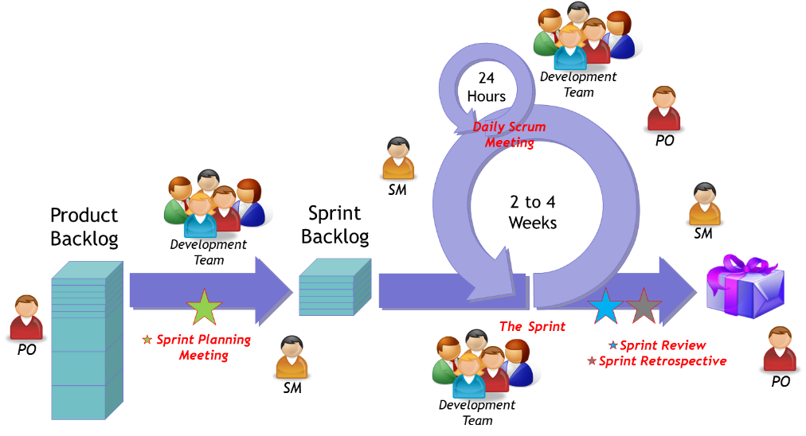

Waterfall and Agile
Agile and Waterfall are both Software Development Lifecycle (SDLC) methodologies that have been widely adopted in the IT industry.
Waterfall methodology, also known as the linear sequential lifecycle model, is defined by its linear, structured approach to project management. It is made up of a series of steps that are completed in sequential order within the software development life cycle (SDLC).
In contrast to waterfall development, agile is defined by its iterative approach to project management. Instead of drafting lengthy project requirements at the onset, an agile team breaks out the product into specific features, and they tackle each one under a specific time constraint, known as a sprint.
Waterfall
The concept of the waterfall model incorporates a step-wise/sequential approach to project development. The project’s progress flows progressively downward through all the phases, similar to a waterfall.
The “waterfall model” is also known as the ”traditional” approach to project development and is known for taking things slow and steady. Each phase has to be finalized before moving on to the subsequent one.
On considering the waterfall methodology, you are aiming for a successful outcome as a result of meticulous planning at each phase in the process. Waterfall methodology mainly emphasizes on accuracy.
Pros
- The static and predictable workflow nature of this model makes it simple to create timelines, cost estimation, and stick to schedules.
- The waterfall model requires clear documentation of each phase in the process.
- The waterfall methodology is suitable for the projects which require various software components.
- Projects progress can be easily measured and evaluated.
- The team doesn’t need any prior knowledge to start working on a project.
- Having a well-documented project and estimated timelines make it simple and easy to give timely updates to senior management.
- It’s quite easy to manage due to an easy review process and distinct deliverables.
- It facilitates the speedy delivery of the product.
- The project undertaken is entirely reliant on the team with less client intervention.
- A quality assurance test is performed before the completion of each phase.
Cons
- Each phase in the process is dependent on others. Change in one step leads to change in other phases as well. Waterfall methodology leads to higher time consumption.
- The process is not suitable for projects that have frequently changing requirements.
- Small changes in the middle of the process may lead to quite a lot of issues.
- The stakeholders/customers can’t see the working of a project until completion of all phases before coding.
- Documentation consumes more time.
- Customers and stakeholders don’t have any idea regarding what they want until they take a view of the working project. The waterfall model manages requirements gathering at the initial phase, so there are chances of missing the essential aspects down the line.
- There is a high tendency to neglect the testing phase, which can be risky for a project.
Agile
Agile methodology is defined as a modern, iterative, and adaptable approach to managing a project. It permits you to breakdown a large project into easier and convenient tasks which are accomplished in short iterations. Every iteration is referred to as a single development cycle and is reviewed by the concerned team.
Agile methodology allows the entire team to adapt to changes quickly with fewer alterations, which in turn end in the successful completion of the project despite the odds encountered. This methodology relies on customer involvement all through the development process.
Pros
- Customer satisfaction can be quickly done through rapid and continuous delivery.
- Agile provides better adaptability to changes with quick response.
- Special attention to design and technical details enhance agility.
- Agile facilitates regular cooperation between the developers and the stakeholders.
- People interaction is emphasized rather than any process and tools.
- The Agile methodology supports a continuous development pace.
- You will get instant feedback.
- You can fix issues quickly.
Cons
- In the case of large and complex projects, it’s quite challenging to assess the effort required during the initial phase of the project.
- Agile provides the least priority to designing and documentation, which can lead to problems. Organizations can easily step off the project if the customer is not transparent with the outcome.
- There is no pre-defined plan. The agile technique works at its best when the designers are capable of being agile.
- Senior programmers are proficient in taking decisions required for the development process. So there is no place for amateur programmers lacking experienced resources.
Scrum and Kanban
Scrum and Kanban are two flavours of Agile software development - two deceptively simple but surprisingly powerful approaches to software development.
Scrum
Scrum is a framework utilizing an agile mindset for developing, delivering, and sustaining complex products,with an initial emphasis on software development, although it has been used in other fields including research, sales, marketing and advanced technologies.
Scrum denotes five time-based events for managing product delivery iteratively and incrementally, while maximizing opportunities for feedback. These are:
- Sprint Planning. An eight-hour session where the team decides what to deliver in the coming sprint (from the product backlog) and how to go about it.
- Sprint. A timeframe of a month or less where the team delivers what was agreed in the sprint planning session.
- Daily Scrum. A 15-minute timebox (commonly referred to as daily stand up) where the team meets daily during the sprint to inspect progress and identify blockers.
- Sprint Review. A four-hour timebox event held at the end of the sprint. The team demonstrates the product/changes to customers and gathers feedback on what to incorporate in the product backlog for delivery in subsequent sprints.
- Sprint Retrospective. A three-hour timebox event held after the sprint review (and before the next sprint planning). The team reviews their work, identifying opportunities for improvement work processes in subsequent sprints.
Kanban
Kanban is an Agile framework that uses visualization to understand processes and workflows better and actual work done in those processes.
- Visualize the Flow of Work. Use cards or software to visualize the process activities on swim lanes.
- Limit Work in Progress (WIP). Encourage your team to complete work at hand first before taking up new work. The team pulls in new work only when they have capacity to handle it.
- Manage Flow. Observe the work as it flows through the swim lanes. Address any bottlenecks.
- Make Process Policies Explicit. Visually diagram the process rules and guidelines for managing the flow of work.
- Implement Feedback Loops. Throughout the work process, incorporate regular reviews with the team and customers to gather and incorporate feedback.
- Improve Collaboratively, Evolve Experimentally. As a team, look for and incorporate improvement initiatives, including through safe-to-fail experiments.